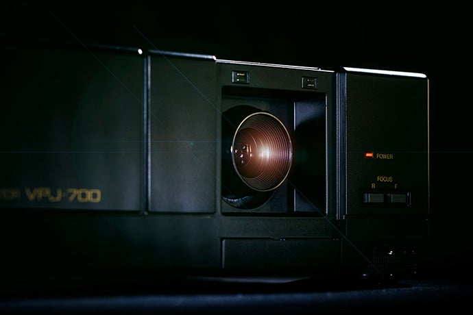
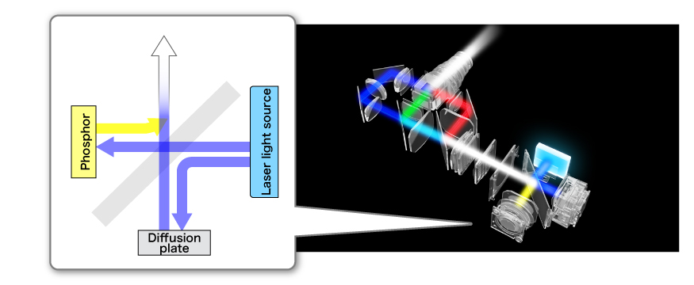

A historical transition
Early electronic projection could use CRTs. Later systems used small image-forming devices and projection optics. Epson introduced the VPJ-700 in January 1989, using three TFT liquid crystal panels to create a full-color image. Its development illustrates how technology related to flat-panel displays also enabled a different kind of visual output.

Three approaches to forming an image
In 3LCD projection, separate red, green and blue light paths pass through liquid crystal panels before a prism recombines them. DLP uses a digital micromirror device: many tiny tilting mirrors modulate light to form an image. LCoS uses liquid crystal on a reflective silicon surface; Sony's SXRD is one implementation. These approaches describe how the projected picture is formed.


Light sources and practical choices
A projector's lamp, LED or laser supplies light. Its LCD, DLP or LCoS system modulates that light. A laser projector can therefore use 3LCD rather than replacing it.

Projected images can cover a large area, but visibility depends on ambient light, screen conditions and available brightness. Installation also involves focus, distance and image alignment. Projectors remain a parallel output route for shared spaces, while direct-view screens serve different viewing arrangements.
Sources and image credits
- Epson: VPJ-700 LCD projector, January 1989
- Epson: 3LCD projection technology
- Epson: laser light-source technology and diagram
- Texas Instruments: DLP and digital micromirror devices
- Sony: SXRD as an implementation of LCoS
- Epson: laser light sources combined with 3LCD
- Epson historical product photograph
- Wikimedia Commons: DMD photograph